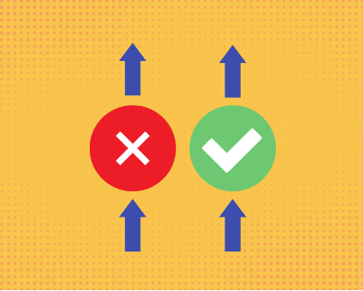

Advantages of Inductive Reasoning
As mentioned previously, inductive reasoning becomes a handy tool in research by taking observation at a specific level and utilizing it to assess various situations, which can also help discover the presence of new information. Advantages of Inductive Reasoning include:
Engagement of Probabilities at a broader level
When dealing with a wider range of probabilities, using inductive reasoning is advantageous. However, the profusion of possibilities can take numerous forms and options. To thoroughly assess a notion, it must be grounded to a precise point. In this circumstance, Inductive reasoning serves as a guiding framework by establishing the saliency of observation at a given point towards a general level.
Avenue for Investigation
In utilizing the inductive method of observation, information is collected and inferred which are then analyzed and investigated. This process stimulates a wider scope of exploration since data analysis must be proven to be relevant or connected to the conclusion that is about to be achieved. Data is not just analyzed, but also scenarios, context, and various domains ( Connect Us, 2019).
“Wrong” becomes highly essential

One feature that distinguishes the Inductive technique is that it recognizes the importance of being incorrect. Observing from a specific point generates pathways to many conclusions along the road, most of which lead to dead ends and mistakes. Acknowledging the “wrongs” in Inductive reasoning boosts research further by directing analysis in the proper direction, allowing for comparison and pattern observation.